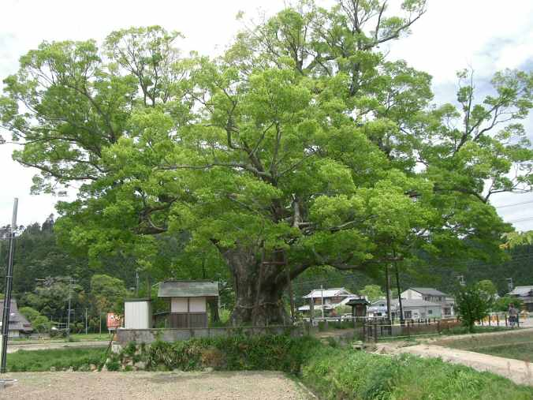

Zelkova — Zelkova (Zelkova)
The elm's disease-proof cousin from East Asia — nimble, vase-shaped, and relentlessly adaptable, she arrived as a replacement and stayed to outshine the original.
Combat flavor
Medium-hard wood and fast urban adaptability make Zelkova a mobile Skirmisher — its Dutch elm disease immunity could translate into a "disease-proof" passive that makes it resist debuffs that cripple other units.
Real-world facts
Typical / max height15–24 m; occasionally to 30 m in native habitat
LifespanCommonly 200+ years; old specimens in Japan exceed 500–1000 years; considered culturally sacred in Japan
WoodJanka ~1040 lbf; medium-to-hard hardwood; highly valued in Japan (keyaki) for fine furniture, Buddhist sculpture, shrine construction; very durable with good insect resistance; density approximately 660–700 kg/m³ (air-dry, estimated from comparable hardwoods)
Growth speedMedium to fast (30–60 cm/year)
Ecology / notable traitsMember of the elm family (Ulmaceae); resistant to Dutch elm disease — deployed widely as an elm substitute in European and North American cities; tolerates acidic and alkaline soils, drought, and urban pollution; vase-shaped crown naturally channels rainwater to roots; no significant toxicity or allelopathy; Zelkova carpinifolia is native to the Caucasus and is listed as Endangered (IUCN)
Gallery
